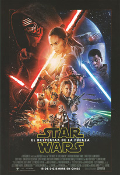

Star Wars: El despertar de la Fuerza
Star Wars: The Force Awakens (2015) * USA
Duración: 135 Min.
Música: John Williams
Fotografía: Dan Mindel
Guion: J.J. Abrams, Lawrence Kasdan y Michael Arndt (Basado en los personajes creados por George Lucas)
Dirección: J. J. Abrams
Intérpretes: Harrison Ford (Han Solo), Adam Driver (Kylo Ren), Daisy Ridley (Rey), John Boyega (Finn), Oscar Isaac (Poe Dameron), Mark Hamill (Luke Skywalker), Carrie Fisher (Leia), Andy Serkis (Líder Supremo Snoke), Kenny Baker (R2-D2), Max von Sydow (Lor San Tekka), Peter Mayhew (Chewbacca), Gwendoline Christie (Capitán Phasma), Ken Leung (Almirantr Statura), Greg Grunberg (Snap Wexley), Domhnall Gleeson (General Hux), Anthony Daniels (C-3PO).
Hace mucho tiempo en una galaxia muy lejana...
Luke Skywalker ha desaparecido y en su ausencia ha surgido de las cenizas del Imperio la siniestra "Primera Orden" que no descansará hasta que el último jedi, Skywalker, haya sido destruido.
Con el apoyo de la República, la Generala Leia Organa dirige a la Resistencia y trata de encontrar a su hermano Luke para restaurar la paz y la justicia en la Galaxia enviando a su piloto más audaz, Poe Dameron, al planeta Jakku a una misión secreta, pues un colaborador ha conseguido allí una pista sobre el paradero de Luke.
En un pequeño pueblo de Jakku Poe se reúne con un hombre, Lor San Tekka, que le entrega un pequeño saquito y le dice que eso empezará a arreglar las cosas, pues ha viajado lejos y ha visto demasiado, siendo consciente de la desesperación existente en la Galaxia y sabe que sin los jedi no puede haber equilibrio en la fuerza, diciéndole Poe que gracias a él tienen una oportunidad, pues la princesa lleva mucho tiempo esperándolo.
Les interrumpe un droide, BB-8, que les advierte del avistamiento de naves de los soldados de asalto acercándose al planeta, por lo que Lor San Tekka le pide a Poe que se vaya y este le pide a él que se esconda.
Poe corre hacia su avión mientras las naves enemigas atacan, siendo también atacado su avión donde están él y BB-8, siendo la nave alcanzada, ante lo que decide entregarle a BB-8 la información facilitada por Lor San Tekka, pidiéndole que se aleje cuanto pueda, y él lo buscará más adelante.
Poe y los defensores abaten a varios soldados imperiales, a uno de los cuales se dirige un compañero, que nada puede hacer por él, que le marca el casco con su sangre.
Poe observa cómo aterriza una nave más grande hacia la que los soldados imperiales llevan a los prisioneros, entre los que se encuentra Lor San Tekka, que es llevado ante el líder de las fuerzas enemigas, Kylo Ren, que va completamente vestido de negro y lleva una máscara del mismo color, el cual le dice a Lor San Tekka al verlo que se ha convertido en un viejo, respondiéndole este que peor es lo que le ha ocurrido a él.
Ren le dice que sabe que tiene el mapa que lleva hasta Skywalker y le exige que se lo entregue a la Primera Orden, a lo que el anciano se niega recordando que la Primera Orden surgió del lado oscuro, pero él no, respondiéndole Ren que él le mostrará el lado oscuro, a lo que el viejo le replica que no podrá negar la verdad, que es su familia, sacando entonces Kylo Ren su espada láser y acabando con el viejo, momento en que Poe dispara contra Ren, que consigue gracias a la Fuerza parar la bala antes de que le llegue, siendo detenido el propio Poe, que es llevado ante Ren que hace que lo registren sabiendo que Lor San Tekka le entregó el mapa, aunque como no lo lleva encima hace que lo suban a su nave.
La capitana de los soldados imperiales, Phasma le pregunta a Kylo Ren qué hacen con los detenidos, diciendo este que los ejecuten, lo que hacen todos los soldados imperiales excepto uno, el que lleva el casco manchado de sangre, que, simula disparar pero no lo hace.
BB-8 es testigo de cómo vuelan el avión de Poe mientras que se llevan a este.
Ya en la base, Phasma le pide explicaciones al soldado de asalto FN-2182 por ir sin casco y le ordena que presente para inspección su arma.
Una persona con la cara cubierta se hace con las piezas de una vieja nave abandonada en el desierto, descubriéndose tras salir de la zona de peligro, y mostrando que es Rey, una muchacha que se desliza hábilmente por las dunas con su carga hasta un viejo vehículo espacial con el que lleva hasta una pequeña población de Jakku la carga fruto de su saqueo para venderla por una mísera recompensa que apenas le da para comer.
Mientras come, fuera de la vieja nave donde vive escucha unos extraños sonidos, que observa son emitidos por BB-8, el droide, que fue atrapado por otro saqueador, ayudando la muchacha a liberarlo pese a las protestas de aquel, que pensaba desguazarlo y venderlo por piezas.
Tras ayudarle a reparar su antena e indicarle el camino a la ciudad y darle consejos para que no se hunda en las arenas movedizas, se despide del droide, que la sigue pese a que ella le pide que no lo haga, consiguiendo con sus ruegos que lo acoja, esa noche.
Entretanto, Kylo Ren acude a interrogar a Poe, al que alaba por ser el mejor piloto de la Resistencia y por no haber dejado que le sonsaquen dónde está el mapa, aunque no puede evitar que Ren se lo sonsaque gracias a la Fuerza, enterándose gracias a ello de que el mapa está en la unidad BB-8, por lo que le encarga al General Hux que regrese a Jakku y lo recupere.
En aquel planeta, Rey le dice a BB-8 que no desespere, que la persona que espera volverá, igual que su familia, que ella sabe también que algún día volverá.
Se acercan a la población para vender las nuevas piezas conseguidas, quejándose de que le paguen por todas ellas lo mismo que poco antes le daban por una, aunque el comprador le propone que le venda el droide a cambio de 60 porciones, y ella, aunque se siente tentada, le dice que no está en venta, llamando el vendedor a alguien para pedirle que siga a la chica y se haga con el droide.
En la nave, un soldado de asalto acude a la sala donde Poe está retenido e indica que tiene órdenes de Ren para que se lo lleve, aunque a medio camino le dice que si le obedece podrá sacarlo de allí ayudándole a escapar, preguntándole si sabe pilotar una de sus naves TIE, indicándole que lo está liberando porque necesita un piloto, no porque sea de la Resistencia.
Suben a una de las TIE, ordenando desde el control, al darse cuenta de la salida no autorizada que abatan al caza, que Poe trata de liberar del cable de retención, debiendo FN-2187 disparar contra sus antiguos compañeros, chocando la nave con sus oscilaciones contra el puesto de control antes de liberarse del cable y lograr escapar, aunque antes de alejarse tratan de destruir la mayor cantidad de cañones posibles para evitar ser abatidos, consiguiendo en efecto FN-2187 destruir sin problemas el primero gracias a su puntería pese a que nunca había manejado dichas armas, consiguiendo destruir también los turboláseres.
Hux debe informar a Kylo Ren de la huida de Poe con la ayuda de un soldado de asalto que no lograron identificar, pero que Ren asegura que debió ser FN-2187, en el que ya se fijó en la aldea de Jakku.
Por su parte Poe no quiere llamarlo por el nombre de robot, y decide llamarlo Finn.
Cuando consiguen escapar del fuego enemigo Finn le pregunta a Poe a dónde se dirigen, respondiéndole este que a Jakku, respondiéndole Finn que lo que deben hacer es escapar de ese sistema, diciéndole Poe que debe recuperar a su droide antes de que lo capture la Primera Orden.
En la nave Hux interroga a la capitana Phasma sobre FN-2187, informando esta que el soldado fue enviado a reacondicionamiento, siendo esa su primera infracción.
Recuperados los cañones ventrales, el caza es alcanzado por uno de los disparos, informando de inmediato a Hux del impacto que inutilizó la nave que debido a ello se estrellará pronto en Jakku, comprendiendo Hux que ha regresado a por el droide.
Se estrellan en efecto en el desierto, donde, al volver en sí Finn inspecciona los restos de la nave, aunque solo consigue rescatar la chaqueta de Poe, pues la nave, que estaba sobre arenas movedizas es tragada sin poder hacer nada por Poe.
Desorientado, camina por el desierto sin rumbo tras quitarse el traje de soldado de asalto, consiguiendo llegar a una aldea.
Hux informa a Ren de la orden del Líder Supremo Snoke de capturar al droide, o destruirlo, aunque Ren duda de la habilidad de sus soldados, señalando Hux que sus hombres están bien adiestrados y programados desde que nacen, pidiéndole Ren que recuperen al droide intacto, recordándole Hux que sus órdenes no deben interferir en las del Líder Supremo, insistiéndole Ren que quiere ese mapa.
Cuando llega a la población lo primero que hace es buscar agua, siendo testigo tras ello del intento de robo de BB-8 por parte de los hombres enviados por el comprador, viendo cómo se defiende Rey con gran habilidad consiguiendo deshacerse de los dos matones sin necesidad de la ayuda que él estaba dispuesto a darle, comprendiendo al ver a BB-8 que es el droide del que le habló Poe.
Al ver a Finn, BB-8 le dice algo a Rey que sale corriendo hacia él atacándolo, y derribándolo, tras lo que lo llama ladrón, ya que el droide dice que robó la cazadora.
Debe explicarles que Poe fue capturado por la Primera Orden y él le ayudó a escapar aunque no consiguió que sobreviviera.
Rey le pregunta si es de la Resistencia a lo que él responde esta vez que sí, ganándose su admiración, pues ella señala que no había conocido a ninguno hasta ese momento.
Rey le cuenta que BB-8 tiene una misión secreta, informándole Finn de esa misión, pues sabe que BB-8 tiene un mapa que lleva hasta Luke Skywalker y todos lo quieren, diciéndole Rey que creía que lo de Skywalker era un mito.
Llegan entonces los soldados de asalto, cogiendo Finn a Rey de la mano para huir ante las protestas de esta, apareciendo tras ello los cazas que comienzan a dispararles, por lo que deben huir, siendo esta vez Rey quien le tome de la mano a él, pidiéndole que la siga hacia una nave en la que espera poder huir, aunque antes de llegar es destruida por un disparo, por lo que corren hacia otra nave que ella dice es un montón de chatarra y lleva años sin volar, pero que es la única posibilidad que tienen, por lo que mientras él se coloca en el lugar del artillero ella trata de hacerla despegar, lo que finalmente consigue, mientras el hombre al que le vendía las piezas sale reclamando su propiedad.
Perseguidos por dos cazas se adentra en el desierto navegando entre las antiguas naves que ella suele saquear, consiguiendo Finn derribar a uno de los cazas, aunque su cañón se atasca debido a un disparo y ella debe tratar de despistar al caza entrando por dentro de una de las antiguas naves, consiguiendo colocarse de tal modo que, aun sin poder mover el cañón Finn acaba también con la otra.
Lo celebran felices, pues ni ella entiende cómo ha podido pilotar de esa manera, pues nadie la entrenó, ni él había disparado.
Extrañado de esa nueva amistad, BB-8, Rey lo calma diciéndole que Finn es de la Resistencia y le ayudará a regresar a su casa.
Cuando informan a Kylo Ren de la huida del droide y del soldado de asalto a bordo de un carguero corelliano robado se indigna y empieza a destruir cosas, creciendo su indignación cuando le cuentan que los acompañaba una chica.
Esta, por su parte, en la nave, trata de reparar una grave avería en el depósito que puede inundar la nave de gas venenoso, aprovechando ese momento Finn para confesarle a BB-8 que no es de la resistencia y que su único afán es huir de la Primera Orden, aunque le promete que si les dice dónde está la base les ayudará a llegar a ella, diciéndole este que está en el sistema Ilinium.
Rey les promete que les dejará en la terminal, pero ella regresará a Jakku, empezando a discutir por ello, viendo mientras lo hacen cómo les han bloqueado y anulado los mandos, siendo atraída la nave a otra superior, que Finn asegura es de la Primera Orden, por lo que sugiere volver a dejar que salga el gas venenoso, lo que cree que funcionará con los soldados, pues sus máscaras filtran el humo, pero no las toxinas.
Pero no son los soldados de asalto quienes entran, sino Han Solo y Chewbacca, al que el primero le dice que están en casa, descubriendo de inmediato a los intrusos, preguntando Solo por el piloto, afirmando Rey que es ella, y cuando él se presenta como Han Solo y les habla del Halcón Milenario, que conducían Rey, no dando crédito a que esa nave sea la que consiguió hacer el Corredor de Kessel en 14 pársecs, lo que Solo rectifica, diciendo que lo hizo en 12, habiendo escuchado ambos hablar de Han Solo, Finn como el general héroe de la rebelión y Rey como contrabandista.
Le piden ayuda tras ello a Solo para llevar al droide a la base de la resistencia, explicándole que lleva a Luke Skywalker.
Observan entonces que les va a asaltar la Banda Mortal Guaviana, pues Solo transporta a tres Rahtar, tres criaturas enormes y peligrosas que le lleva al rey Prana, los cuales se quejan de que esté jugando a dos bandas, pues les pidió dinero tanto al rey como Kanjiklub por los mismos Rahtas, y estos, que llegan en ese momento quieren también recuperar su inversión.
Solo les asegura que los dos obtendrán lo prometido, aunque ahora parecen más interesados en la unidad BB-8 y en los dos fugitivos que en los Rahtas.
Rey decide conectar los fusibles para abrir unas compuertas entre las que queden atrapadas ambas bandas, aunque se equivoca y abre las puertas de los Rahtar que recorren la nave persiguiéndolos a todos y acabando con algunos, siendo Finn atrapado por los tentáculos de uno de ellos, consiguiendo salvarse gracias a que Rey cierra una de las puertas cortando los tentáculos con los que arrastraba a Finn.
Se reúnen tras ello él y Rey con Han Solo y Chewbacca, que en el enfrentamiento contra los miembros de las bandas fue herido.
Corren hacia el Halcón huyendo de las bandas y de uno de los Rahtar, consiguiendo dejarlos atrás al poner la nave a la velocidad de la luz, aunque sus enemigos envían un mensaje a la Primera Orden de que el droide está en el Halcón Milenario.
El líder Supremo al enterarse de la huida asegura ante Hux y Kylo Ren que si regresa Skywalker los nuevo Jedi se alzarán, y han de evitarlo, proponiendo Hux cambiar de estrategia, señalando que es el momento de utilizar el arma para destruir al gobierno de la República que es el que apoya a la Resistencia para debilitarla e impedir que contacte con Skywalker.
El Líder Supremo le pregunta luego a Ren si ha sentido que ha habido un despertar, reconociendo este que sí, señalándole que el droide está en el Halcón Milenario en manos de su padre, aunque Ren le dice que ese hombre no significa nada para él y que no se dejará seducir.
Con todo controlado en el Halcón Milenario, examinan el mapa de BB-8 que comprueban es incompleto.
Han les cuenta que Luke preparaba a los nuevos Jedis cuando un aprendiz lo traicionó y se volvió al lado oscuro, por lo que, sintiéndose responsable se alejó de todos, probablemente en busca del primer templo Jedi.
Han Solo dice que les ayudará poniéndoles en contacto con una antigua amiga que llevará el droide a casa, llevándoles hasta un planeta, Takodana, que es lo contrario que Jakku, lo que sorprende a Rey que nunca había visto tanta vegetación y agua.
Han le entrega entonces a Rey un arma y le propone que sea su segundo de a bordo, señalándole ella que se siente halagada, pero debe volver a casa.
Han sabe que si ellos pudieron detectar el Halcón, la Primera Orden estará cerca, por lo que para devolver BB-8 a la Resistencia Maz Kanata es su mejor opción
Entran en un tugurio donde hay música y la gente bebe, siendo detectada la presencia de BB-8 tanto por parte de la Resistencia como de la Primera Orden.
Kylo Ren comienza a percibir la atracción hacia la luz y pide ante la máscara quemada de su abuelo, Darth Vader, que le vuelva a mostrar la oscuridad para acabar lo que él empezó.
Reunidos con Maz Kanata, Han le pide que entregue el droide a Leia, diciéndole Maz que no puede seguir huyendo de esa lucha, diciendo él que Leia no quiere verle ya.
Por su parte Finn asegura que no pueden ganar contra la Primera Orden y que lo que deben hacer es huir para evitar que los masacren, diciéndole Maz que si lo que desea es desaparecer puede encontrar trabajo en una nave que lo llevará hasta el borde exterior, decidiendo Finn intentarlo, confesándole a la decepcionada Rey que no es de la resistencia ni es un héroe, solo un soldado de asalto que tomó una decisión tras la primera batalla: huir para no matar para ellos. Señalando que se avergonzó de lo que era al conocerla a ella, pero no desea volver pese a los ruegos de ella.
Al verle alejarse Rey recuerda los gritos que daba de niña pidiéndoles a sus padres que volvieran, sintiendo una llamada que la lleva hacia el sótano mientras sigue escuchando aquellos gritos de niña, llegando hasta una puerta tras la que encuentra un arcón en el que descubre una espada láser, recordando al tocarla su niñez y el momento en que se llevaron a sus padres.
Y de pronto se ve en un bosque donde alguien parece atacarla con una espada láser.
La encuentra allí Maz que le dice que el sable láser la está llamando y que nunca volverán quienes espera, y que la luz la guiará, pidiéndole que coja la espada, a lo que Rey se niega y huye, internándose en el bosque.
Entretanto en la base de Starkiller, Hux señala que es el comienzo del fin de la República y que su potentísima arma acabará con el senado y todos los demás sistemas se unirán a ellos.
En Takodana Finn se dispone a huir cuando ve unos potentes haces de luz que se dirigen desde el Starkiller contra el sistema Hosnian, acabando con él y con sus habitantes.
Finn regresa al verlo para decirle a Han que eso lo ha realizado la Primera Orden, preguntándole por Rey, a la que BB-8 siguió hasta el bosque, viendo ambos cómo cientos de naves se acercan hasta Takodana.
Maz le entrega a Finn la espada láser para que se la entregue a Rey, la cual al ver las naves regresa, observando cómo estas destruyen el bar donde estaba momentos antes, siendo ella misma atacada por varios soldados de asalto con los que acaba gracias al arma que le entregó Han, pidiendo a BB-8 que huya y se esconda.
Han, Chewie y Finn se enfrentan también contra los soldados de asalto, siendo el último reconocido por uno de los soldados con el que se enfrenta, valiéndose de la espada láser, aunque su inexperiencia está a punto de costarle la vida, salvándolo Han.
Rodeados por los soldados de asalto, los rebeldes consiguen salvarse gracias a la llegada de las naves de la Resistencia que atacan a las de la Primera Orden con gran acierto, gracias a lo cual pueden huir Finn, Han y Chewie.
Finn corre mientras alaba al piloto que está teniendo tanto acierto en sus ataques.
Entretanto Rey es descubierta en el bosque por Kylo Ren, al que dispara, aunque este, con su sable láser rechaza sus ataques, impidiendo que ella pueda moverse gracias a la Fuerza, preguntándole por el droide, aunque ella se resiste.
Llegan entonces varios soldados de asalto que le dicen que necesitan más fuerzas, aunque Ren indica que ya tiene lo que quiere y que pueden olvidarse del droide, ordenando retirarse a sus fuerzas y llevándose a Rey con ellos, corriendo Finn para tratar de evitarlo, aunque llega demasiado tarde.
Retiradas las naves enemigas, llega otra nave de la que al aterrizar salen Leia y C-3PO, saludando la primera contenta a Han Solo, el cual le cuenta que vio al hijo que tuvieron.
Finn observa a las tropas de la resistencia, observando cómo BB-8 se dirige a uno de los pilotos de los Ala-X, observando Finn que se trata de Poe, que está vivo y que al verlo le da las gracias por haber defendido a su droide y por haber completado su misión, llevándolo tras ello ante la generala Organa, a la que Finn le cuenta que secuestraron a su compañera.
Poe señala que Finn trabajó en la base y conoce por ello el arma que destruyó el Sistema Hosnian, por lo que puede serles de gran ayuda.
Cuando analizan el mapa en posesión de BB-8, C-3PO señala que es incompleto y no se corresponde con ningún sistema conocido.
Pero BB-8 encuentra a R2-D2 inutilizado, y le explica a C-3PO que el resto del mapa está en su poder, indicándole este que el robot está en modo ahorro de energía desde que Luke se marchó y duda que sea recuperable.
Leia le dice a Han que no quiere olvidar a su hijo, sino que desea hacerle volver, lamentando haberlo enviado a entrenar con Luke, pues debido a ello Snoke lo atrajo al Lado Oscuro, aunque ella cree que aún hay luz en él, y cree que él, como padre podrá atraerlo de nuevo.
Rey despierta atada como antes lo estuvo Poe recibiendo la visita de Kylo Ren, que a petición de ella se quita la máscara y le pide que le hable de BB-8 y del plano, pues él tiene el resto que necesita completar.
Ren le hace ver que la conoce muy bien, y sabe que ve a Han Solo como el padre que nunca tuvo.
Trata tras ello de obtener la información sobre el mapa, ya que sabe que lo vio y lo tiene en su cabeza, por lo que se dispone a obtenerlo con sus poderes, aunque ella se resiste, dándose cuenta al hacerlo de que él no es tan fuerte y adivinando que tiene miedo de no llegar a ser tan fuerte como llegó a ser Darth Vader.
Tras su intento Ren habla con el Líder Supremo, y le dice que la chatarrera se le resistió, pues la Fuerza es poderosa en ella pese a que no está entrenada.
Se reúne con ellos Hux que indica que el droide puede estar ya en manos de sus enemigos, por lo que lo más conveniente sería destruir a la Resistencia para evitar que lleguen a Skywalker, habiendo observando que su nave de reconocimiento se dirigió al Sistema Illeenium, señalando que deben preparar el arma para aplastarlos.
Snoke, que está de acuerdo pide que lleven a la chica ante él.
Esta, consciente por vez primera de su poder, pide a uno de sus guardianes que le quite las sujeciones aunque el soldado dice que hará lo contrario y se las apretará más, viendo ella tras insistir cómo el soldado le obedece, pudiendo escapar, ordenando Kylo Ren al descubrirlo a sus guardias que la busquen.
Entretanto Hux ordena cargar el arma, absorbiendo la luz solar.
La Resistencia sabe que la Primera Orden dispone de un arma de hipervelocidad, una especie de cañón láser, mucho más potente que la Estrella de la Muerte, el Starkiller que utiliza energía solar que drena de un sol hasta hacerlo desaparecer, con la que podrían hacerlos desaparecer, por lo que deberán destruirla.
Finn les informa que el arma dispone de un oscilador térmico que deberían destruir para desestabilizar el núcleo e inhabilitar el arma, aunque para llegar hasta el mismo deberán inhabilitar previamente inhabilitar sus escudos, algo que Finn asegura podría hacer, aunque para ello debería estar en el planeta, señalando Han Solo que lo llevarán.
Mientras se preparan para salir acude Leia a despedirlos, diciéndole que lo ha echado de menos, recordando ambos que lo pasaron muy bien, pidiéndole a Han que si ve a su hijo lo lleve a casa.
El Halcón se dirige a su destino, debiendo ir a la velocidad de la luz para poder atravesar sus escudos, por lo que tendrán un aterrizaje muy accidentado, quedando de hecho al borde de un precipicio.
Kylo Ren trata de encontrar a Rey, que consigue esconderse de los guardias, sintiendo de pronto y mientras la busca la presencia de Han Solo.
Este avanza con Chewie y Finn que les muestra la posición del colector, ya que cuando estaba allí se dedicaba a saneamiento, preguntándole Han cómo sabe entonces inutilizar los escudos, reconociendo que no sabe, pero que lo dijo porque quería rescatar a Rey, haciéndole ver Han que la Galaxia depende de ellos.
Muy cerca de ellos Hux es informado de que faltan 15 minutos para que el arma esté completamente cargada.
Los rebeldes deben tratar de inutilizarla, consiguiendo raptar a la capitana Phasma a la que obligan a inhabilitar los escudos, pudiendo a partir de ese momento Poe y los Ala-X penetrar en su sistema y acercarse al núcleo para destruirlo, debiendo enviar Hux a todos los escuadrones a combatirlos.
Finn, Han y Chewie encuentran a Rey por fin, mostrándose esta muy contenta al enterarse de que fue idea de Finn ir a buscarla.
Fuera Poe y sus compañeros son atacados, perdiendo la mitad de la flota, por lo que Finn indica que no pueden irse dejándolos así, proponiendo Solo utilizar los explosivos que lleva Chewbacca, colocando dichas cargas en las columnas centrales.
Han ve entonces a Kylo Ren, su hijo, al que sigue hasta una pasarela llamándolo por su nombre, Ben, estando cada uno a un extremo de dicha pasarela.
Ren afirma que llevaba mucho tiempo esperando ese día, pidiéndole su padre que se quite la máscara para poder ver el rostro de su hijo, accediendo este, aunque diciéndole que su hijo ya no está, pues lo destruyó, afirmando Han que no es cierto, que está vivo y que Snoke lo utiliza por su poder, pero que lo aplastará cuando consiga lo que quiere.
Ren le dice que ya es tarde, pero Han insiste y le dice que quiere que vuelva a casa, pues lo echan de menos.
Ren le dice que está desgarrado, pues sabe lo que debe hacer, pero no sabe si tendrá fuerzas para hacerlo, preguntándole a su padre si le ayudará afirmando Han que sí, viendo cómo Ren le entrega su espada láser aunque sin soltarla, la enciende entonces y atraviesa a su padre, dándole las gracias y viendo cómo cae al abismo.
Justamente en ese momento Leia siente algo en su interior.
Indignado, Chewbacca dispara a Ren y a los soldados que salen a su encuentro, debiendo ayudarlo Rey y Finn, haciendo Chewbacca explosionar las cargas.
En la base informan que el oscilador está dañado pero sigue operativo y en dos minutos el arma estará dispuesta y podrán utilizarla.
Finn y Rey salen para buscar el Halcón Milenario cuando sale Ren a su encuentro, llamándolo Rey monstruo, tratando de dispararle, aunque él rechaza el disparo con sus poderes, lanzándola contra un árbol.
Finn saca entonces la espada láser de Luke, que Ren dice le pertenece, y comienzan a luchar, y aunque aguanta la lucha, Ren acaba arrancándole la espada y golpeándolo.
Trata tras ello de recuperar Ren la espada, pero es más fuerte el poder de Rey, a cuyas manos va la espada, luchando contundentemente contra Kylo Ren.
En un último esfuerzo Poe decide acercarse más al oscilador para tratar de acabar con él, mientras lo escoltan otras naves que lo cubren, estando el arma a solo 30 segundos de ser cargada, aunque antes de conseguirlo Poe destruye el oscilador haciendo que comience a explosionar el Starkiller.
Rey y Ren siguen peleando mientras el planeta comienza a desintegrarse, diciéndole Ren que si se une a él le enseñará los caminos de la Fuerza, aunque ella lo acorrala dejándolo herido.
Los soldados abandona sus puestos mientras Hux informa al Líder Supremo de que el planeta comenzó a colapsare tras reventar las células de combustible, pidiéndole Snoke que abandone la base y le lleve a Kylo Ren, pues su entrenamiento debe completarse.
Rey acude a buscar a Finn, llorando ante este, cuando Chewbacca acerca el Halcón Milenario y le ayuda a llevarlo hasta la nave, saliendo del planeta antes de que este explosione y desaparezca a sus espaldas.
Cuando llegan a la base se llevan a Finn, que aún respira para tratar de salvarlo mientras Leia recibe a Rey y la abraza, viendo la tristeza de Chewbacca.
Reunida la Resistencia, llevan ante la misma a R2-D2, que volvió a funcionar, proyectando la información que posee en su interior, y en la que encaja la de BB-8
Sabiendo ahora dónde puede buscar a Luke, y antes de partir, Rey va a despedirse de Finn, aun inconsciente, diciéndole que está segura de que volverán a verse, tras lo que le da un beso en la frente para despedirse.
Se dirige tras ello al Halcón Milenario, despidiéndola Leia diciéndole "Que la fuerza te acompañe", sentándose al lado de Chewbacca, con el que parte en busca de Luke hacia un pequeño planeta rocoso, ascendiendo Rey hasta la cima de una colina, donde encuentra a un hombre envuelto en una capa que mira hacia el infinito, y en el que reconoce, cuando se da la vuelta, a Luke al que le muestra su espada láser esperando que la recoja.